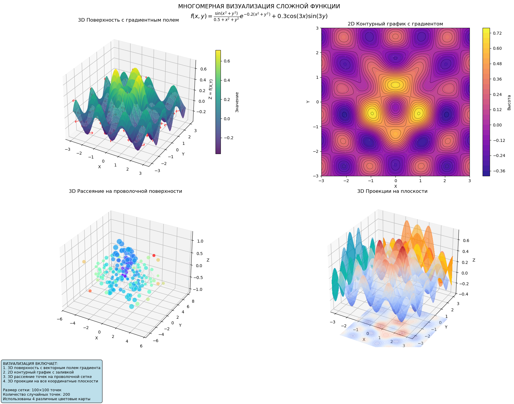

Изучить основы подключения графики в LaTex с использованием пакета graphicx, освоить управлние размером/поворотом/обрезной изображений , работу с плаваюзщеми объектами (floats), а также механизмамаи перекрестных ссылок \label и /ref и влияние параметров \textwidth и \linewidth.
Подключить внешнее изображение в документ LaTeX, заменив демонстрационные изображения на собственное.
Исследовать параметры height, width, scale, angle, trim и clip в \includegraphics.
Сформировать «длинный» пример с использованием lipsum и проверить работу float’ов с позиционными спецификаторами [h], [t], [b], [p], а также принудительным [H].
Сравнить поведение размеров рисунка при задании относительно \textwidth и \linewidth (в том числе в режиме twocolumn).
Проверить работу перекрёстных ссылок и выяснить, сколько прогонов компиляции требуется для корректной подстановки номеров.
Экспериментально проверить, что произойдёт при размещении \label до \caption у рисунка и при размещении \label после \end{equation} у формулы.
Подготовить отчёт и презентацию, опубликовать материалы в репозитории и оформить ссылки на скринкасты.
LaTeX поддерживает подключение внешней графики через пакет graphicx, который добавляет команду \includegraphics. В качестве исходных форматов обычно используются PNG/JPG (растровые) и PDF (векторный). При задании размера через width или height LaTeX автоматически сохраняет пропорции изображения.
Для технических документов важна концепция «плавающих» объектов (floats): LaTeX может переносить рисунки и подписи на более удачное место, чтобы избежать больших пустых областей и улучшить верстку. Управление размещением выполняется через позиционные спецификаторы [h], [t], [b], [p]. Пакет float добавляет спецификатор [H], который пытается поставить рисунок строго «здесь», но может ухудшить внешний вид документа за счёт больших разрывов.
Для технических документов важна концепция «плавающих» объектов (floats): LaTeX может переносить рисунки и подписи на более удачное место, чтобы избежать больших пустых областей и улучшить верстку. Управление размещением выполняется через позиционные спецификаторы [h], [t], [b], [p]. Пакет float добавляет спецификатор [H], который пытается поставить рисунок строго «здесь», но может ухудшить внешний вид документа за счёт больших разрывов.
Разница между \textwidth и \linewidth особенно заметна в режиме twocolumn: \textwidth соответствует ширине текстового блока страницы, а \linewidth — текущей ширине строки (например, ширине колонки), поэтому одинаковый коэффициент может давать различный итоговый размер изображения.
\usepackage{graphicx}
\usepackage{lipsum}
\usepackage{float}
\usepackage[hidelinks]{hyperref}
\graphicspath{{figs/}}
\begin{center}
\includegraphics[height=2cm]{image.png}
\end{center}

height и width.scale и angle.trim и clip (формат left bottom right top).Пример обрезки:
\includegraphics[clip, trim=20 10 80 40, width=0.6\textwidth]{image.png}
Плавающие изображения и спецификаторы
Добавлен «рыбный» текст lipsum, чтобы у LaTeX появилось пространство для перестановки float’ов.
Созданы рисунки с [ht], [tb], [p], а также принудительное размещение [H].
Зафиксировано, что LaTeX может переносить рисунки на следующую страницу при нехватке места, особенно при крупных width/height.
Сравнение \textwidth & \linewidth
Изображение масштабировалось относительно \textwidth и \linewidth.
Документ компилировался в обычном режиме и в режиме twocolumn (включение параметра twocolumn в строке \documentclass).
Отмечено, что в twocolumn относительный размер по \linewidth соответствует ширине текущей колонки и визуально отличается от масштаба по \textwidth.
Перекрестные ссылки
\label{figs:...} и ссылки на них с последюущим отображением \ref{fig:...} в тексте.\label перед \caption. Получен рисунок с невеным номером\equation получает неправильный номерКомпиляция
Для русской весии использована сборка pdflatex с кодировкой [T2A, язык babel]. Для перекрестных ссылок минимум 2 запуска:
pdflatex main4_ru.tex
pdflatex main4_ru.tex
pdflatex main4.tex
pdflatex main4.tex
В ходе работы были освоены базовые и расширенные способы встаки изображений в LaTex: управление размерами, поворотом и обрезкой, а также организация изображений в подпапке через \graphicspath. На практике подтверждено, что механизм работы float заметно влияет на итоговое расположение рисунков, а принудительное [H] может ухудшить внешний вид после верстки. Эксперименты показали различие между \textwidth и \linewidth в режиме twocolumn. Было проверено, что корректная работа перекрестных ссылок требует как минимум 2 прогонов компиляции, а неправильное рпасположение \label до \caption или после \end{equation} приводит к некорретным ссылкам.
LearnLaTex: https://www.learnlatex.org/ LaTex Project: https://www.latex-project.org/ Tex Live: https://www.tug.org/texlive/
Репозиторий с материалами: https://github.com/PepsiMonster/SciWriting/tree/main/ex4